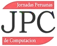

 Artículos
Aceptados
Correctores Ortográficos para Múltiples Idiomas
Basados en Métodos de Acceso Métrico
Autores: Jan Beeck, Ernesto Cuadros
Los correctores ortográficos se han vuelto en una herramienta
sumamente importante para los editores de texto, así como para
otras aplicaciones, además que también se pueden utilizar para
corregir la gran cantidad de información que actualmente esta
en texto y debe ser capaz de soportar múltiples idiomas. Ante
ese problema y por el tipo de datos que actualmente existen es
que aparecen los espacios métricos que sumadamente con una
función de distancia forman los accesos métricos. Para
realizar el corrector ortográfico se ha elegido el Slim- Tree
una estructura dinámica que tiene una serie de ventajas frente
a otros accesos métricos y la distancia Levenshtein (Edit) que
calcula el mínimo número de letras que hay que agregar, quitar
o cambiar en una palabra para convertirla en otra.
Extracción de Características de Huellas
Digitales
Autores: Wilfredo Bardales Roncalla, Juan
Carlos Gutierrez Cáceres
La búsqueda de mecanismos de seguridad, en nuestra sociedad
actual, es cada vez más necesaria. El propósito de éste
artículo es presentar un mecanismo de seguridad basado en
huellas digitales. El principal problema, para conseguir una
identificación positiva, es representar una huella digital, de
forma tal, que podamos saber a quién pertenece. Visto de esta
forma, su caracterizacón es esencial. Para conseguir ello
proponemos un nuevo método de caracterización, valiéndonos de
la Transformada Discreta Wavelet. Así pues, describiremos el
diseño e implementación de un sistema de identificación de
huellas digitales.
Reconocimiento de Voz
Autores: Jose Peñarrieta
Extracción de Características de Huellas
Digitales
Autores: Wilfredo Bardales Roncalla, Juan
Carlos Gutierrez Cáceres
La búsqueda de mecanismos de seguridad, en nuestra sociedad
actual, es cada vez más necesaria. El propósito de éste
artículo es presentar un mecanismo de seguridad basado en
huellas digitales. El principal problema, para conseguir una
identificación positiva, es representar una huella digital, de
forma tal, que podamos saber a quién pertenece. Visto de esta
forma, su caracterizacón es esencial. Para conseguir ello
proponemos un nuevo método de caracterización, valiéndonos de
la Transformada Discreta Wavelet. Así pues, describiremos el
diseño e implementación de un sistema de identificación de
huellas digitales.